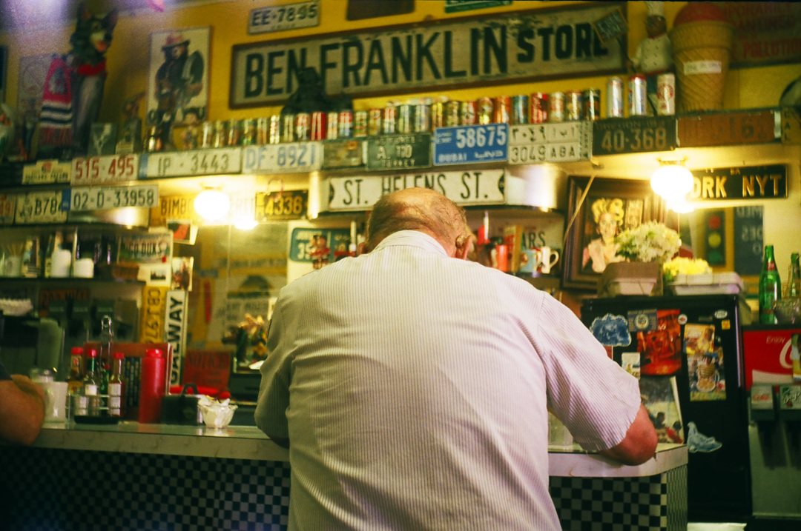
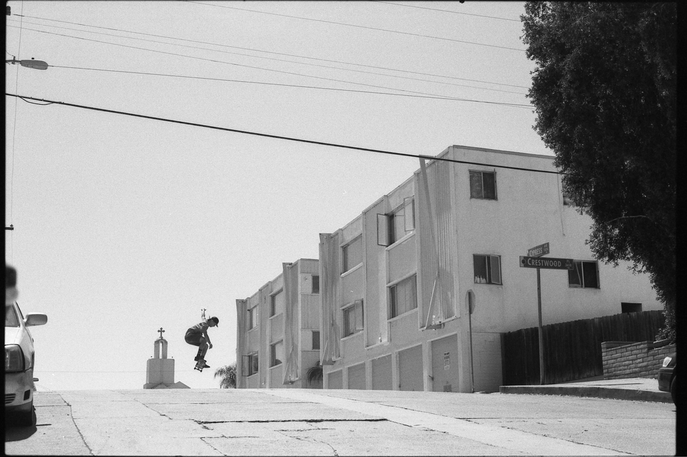
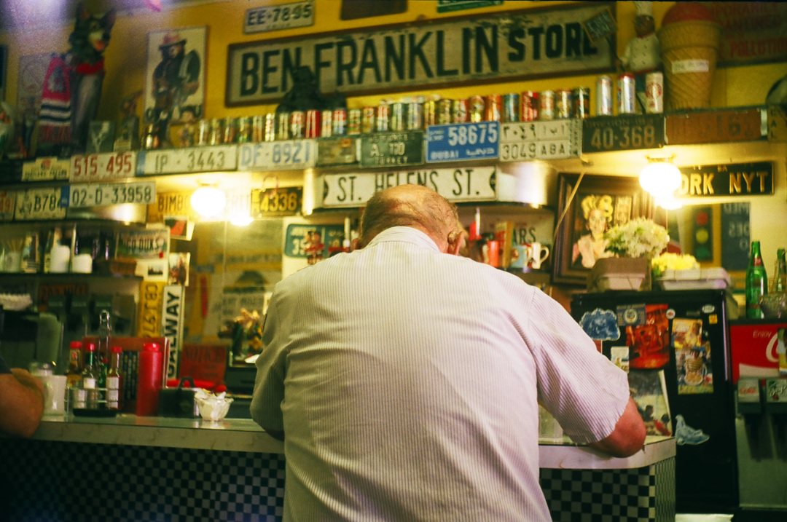
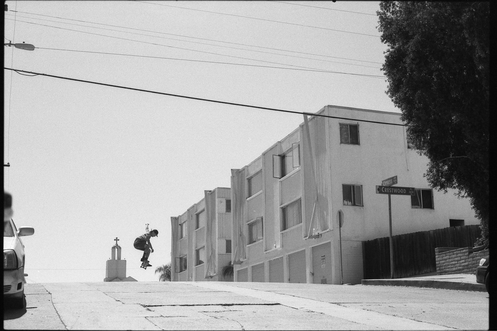

Amateur (n.) 1784, from French amateur "one who loves, lover", from Latin amatorem "lover, friend," agent noun from amatus, past participle of amare "to love" (see Amy). Meaning "one who cultivates and participates (in something) but does not pursue it professionally or with an eye to gain" (as opposed to professional) is from 1786, often with disparaging shades, "dabbler, dilettante," except in athletics, where the tinge formerly shaded the professional. As an adjective, by 1838.
 


